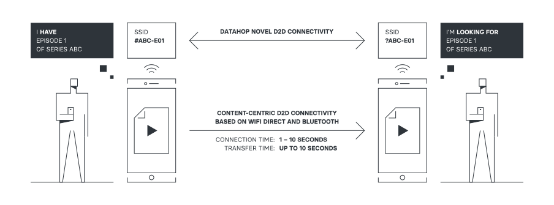

Datahop
What is DataHop ?
Imagine an entertainment event (conference, concert, etc): why can you not share documents/photos/videos with people around that you don’t know and get content from others? Everyone is interested in the same content!
The Internet is enormously successful in reducing the distance between communicating parties that are physically located far from each other. In doing so, the Internet protocols have increased the distance of communicating parties within physical proximity to each other.
However, when it comes to connecting people that are phisically collocated, we have not invested enough effort to build protocols and applications that connect devices locally. It is very difficult to exchange content locally without having to save our content using remote cloud service, being inefficient and without having data privacy.
At DataHop we provide a new platform to enable local-first communcation to connect mobile devices directly, building a bleeding edge content propagation network, sharing content locally and privately by only using our smartphone devices and without requiring any network infrastructure or Internet connection.
How does it work ?
DataHop requires the use of device-to-device technologies to provide direct connectivity between devices without requiring infrastructure or Internet connectivity. The technologies available in today’s smartphone devices are basically two: Bluetooth and WiFi-Direct. Bluetooth is a short-range wireless technology standard used for exchanging data between fixed and mobile devices over short distances. However, for transferring heavy content (most of the multimedia content used in modern smartphones) it is not the best technology because its low bandwidth, orders of magnitude lower compared with the commonly used technology for content downloading such as WiFi or 4G/5G. For this reason, DataHop uses WiFi-Direct technology for content transfers between devices, a technology equivalent to the traditional WiFi technology, but used for the connection between end-user devices, instead of the connection of end-user devices and a WiFi access-point. However, a variant of Bluetooth, Bluetooth Low Energy (BLE) can be very useful to transmit signals of tiny data periodically with a very low energy consumption, crucial for battery powered devices. For this reason, DataHop is using BLE for service discovery, aimed at discovering other users’ devices willing to share some content and is starting WiFi-Direct connections for transferring content only in case other available information is detected.

DataHop uses the WiFi-Direct specification to exchange specific application content updates and not to provide generic connectivity to the smartphone device. WiFi-Direct provides all the features required to provide smart connectivity between users and transfer content without infrastructure participation. However current Android WiFi-Direct Android implementation still has one drawback: it requires user participation to accept every connection. In order to avoid any user participation allowing DataHop to run in the background, seamlessly to users, DataHop uses a hybrid mode according to which devices create a WiFi-Direct network using the previously described WiF-Direct Autonomous Mode and destination devices connect to it as a normal WiFi connection (legacy connection).
DataHop Features
Minimum battery required
Transfering content using DataHop solution is more energy-efficient than using 4G connectivity. Downloading using 4G consumes ~50% more than using DataHop and only ~15% extra battery consumption for the whole day (retrieving a 5 min video clip every 5 min during 12 hours).
No Internet required
DataHop allows transfering content between devices without requiring any kind of Internet connectivity, neither any additional network device, without consuming your mobile data plan.
Privacy and security
DataHop communications are fully private and all transfers are local and encrypted. No content or data is stored in remote servers.
No location tracking
When using DataHop there is no location tracking, no connection is established between smartphone devices and any tracking service. Only device-to-device local communications.
Supporters
DataHop is part of the NGI Pointer project "Incentivised Content Dissemination at the Network Edge" that has received funding from the European Union’s Horizon 2020 research and innovation programme under grant agreement No 871528